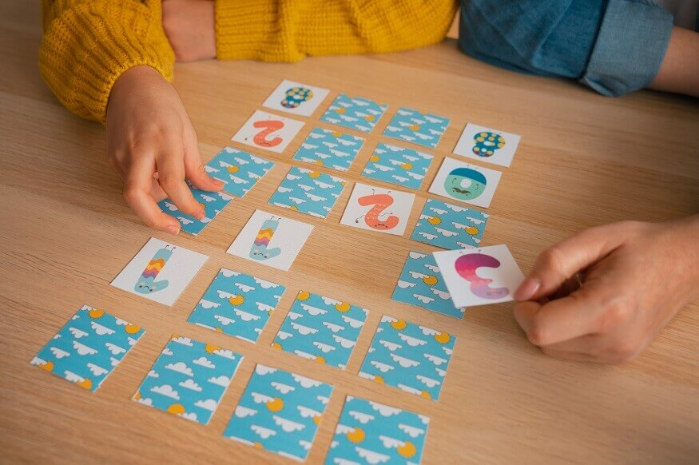

Actividades recomendadas
| Actividad | Objetivo |
|---|---|
| Movimiento en cámara lenta | Desarrolla la atención y el seguimiento de instrucciones. Los alumnos aprenden a regular su comportamiento a través de movimientos en cámara lenta. |
| Descifrando el mensaje | Fomenta el trabajo en equipo, la colaboración, la atención y la integración social. Los equipos inventan un símbolo para cada letra del abecedario y forman mensajes que el otro equipo debe adivinar. |
| Memorama | Trabaja la memoria, la sociabilidad y la atención. Se recomienda colocar alumnos sociables con quienes tienen más dificultades para integrarse. Las cartas contienen imágenes que deben encontrarse por pares. |
| Simón dice | Un alumno da instrucciones comenzando con "Simón dice". Trabaja la concentración, el control de impulsos y la atención de instrucciones. |

Estrategias de trabajo
| Estrategia | Objetivo |
|---|---|
| Establecer rutinas | Ayuda a la organización y a la previsibilidad a través de horarios y pasos consistentes, reduciendo la ansiedad y mejorando el enfoque. |
| Descomponer tareas grandes | Permite al joven enfocarse en un solo paso a la vez, disminuyendo la frustración ante proyectos complejos o extensos. |
| Uso de temporizadores | Técnicas como Pomodoro facilitan la gestión del tiempo y mantienen la atención con periodos cortos de trabajo seguidos de pausas. |
| Listas de verificación y calendarios | Apoyo visual para la memoria de trabajo y la planificación, ayudando a priorizar actividades y recordar responsabilidades. |
| Fomentar esquemas visuales | Los mapas mentales mejoran la comprensión y la retención de información al presentarla de forma organizada, gráfica y jerárquica. |